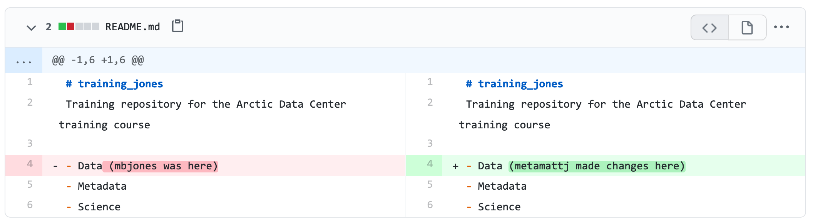
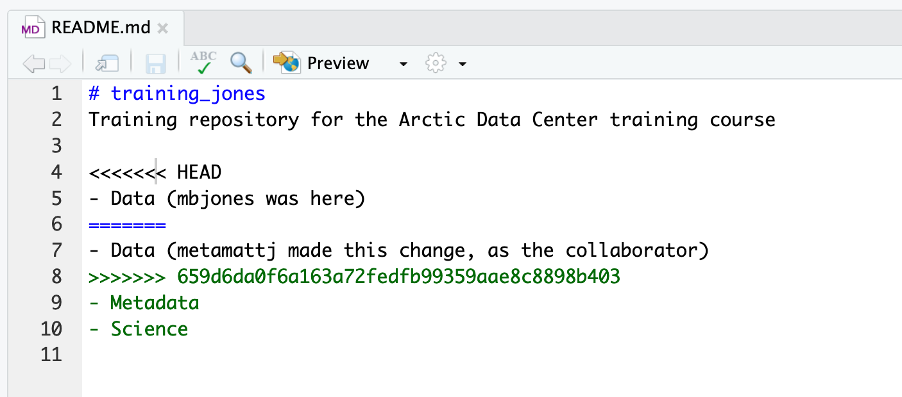
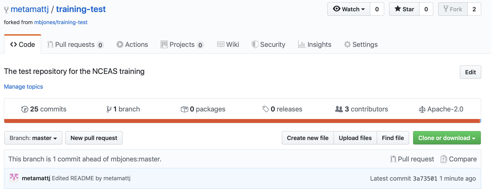
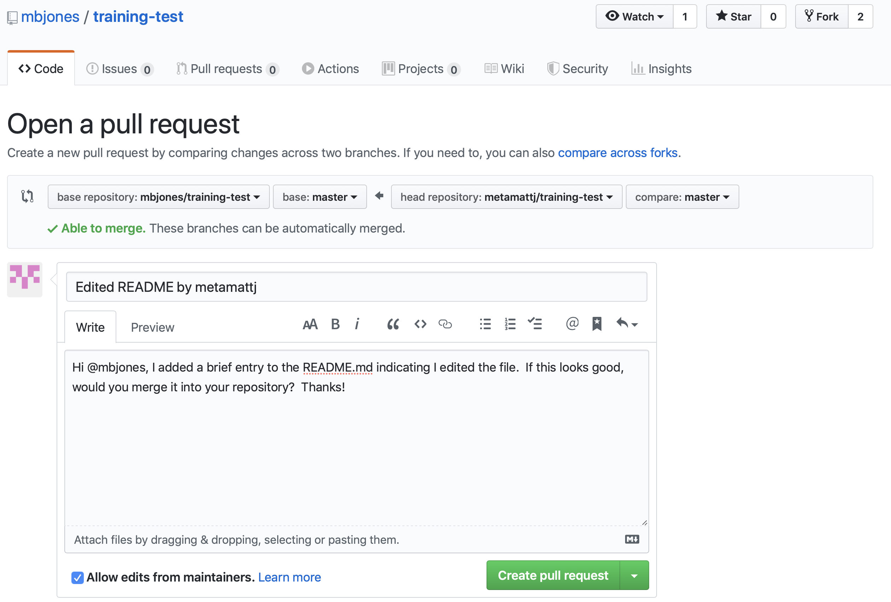

2 Session 2: git conflicts
2.1 Learning Objectives
In this lesson, you will learn:
- How to use Git and GitHub to collaborate with colleagues on code
- What typically causes conflicts when collaborating
- Workflows to avoid conflicts
- How to resolve a conflict
2.2 Introduction
Git is a great tool for working on your own, but even better for working with friends and colleagues. Git allows you to work with confidence on your own local copy of files with the confidence that you will be able to successfully synchronize your changes with the changes made by others.
The simplest way to collaborate with Git is to use a shared repository on a hosting service such as GitHub, and use this shared repository as the mechanism to move changes from one collaborator to another. While there are other more advanced ways to sync git repositories, this “hub and spoke” model works really well due to its simplicity.
In this model, the collaborator will clone a copy of the owner’s repository from
GitHub, and the owner will grant them collaborator status, enabling the collaborator
to directly pull and push from the owner’s GitHub repository.

2.3 Collaborating with a trusted colleague without conflicts
We start by enabling collaboration with a trusted colleague. We will designate the Owner as the person who owns the shared repository, and the Collaborator as the person that they wish to grant the ability to make changes to their reposity. We start by giving that person access to our GitHub repository.
Setup
- We will break you into pairs, so choose one person as the
Ownerand one as theCollaborator - Log into GitHub as the `Owner
- Navigate to the
Owner’s training repository (e.g.,training_jones)
Then, have the Owner visit their training repository created earlier, and visit the Settings page, and select the Manage access screen, and add the username of your Collaborator in the box.

Once the collaborator has been added, they should check their email for an invitation from GitHub, and click on the acceptance link, which will enable them to collaborate on the repository.
We will start by having the collaborator make some changes and share those with the Owner without generating any conflicts, In an ideal world, this would be the normal workflow. Here are the typical steps.
2.3.1 Step 1: Collaborator clone
To be able to contribute to a repository, the collaborator must clone the repository from the Owner’s github account. To do this, the Collaborator should visit the github page for the Owner’s repository, and then copy the clone URL. In R Studio, the Collaborator will create a new project from version control by pasting this clone URL into the appropriate dialog (see the earlier chapter introducing GitHub).

2.3.2 Step 2: Collaborator Edits
With a clone copied locally, the Collaborator can now make changes to the
index.Rmd file in the repository, adding a line or statment somewhere noticeable
near the top. Save your changes.
2.3.3 Step 3: Collaborator commit and push
To sync changes, the collaborator will need to add, commit, and
push their changes to the Owner’s repository. But before doing so, its good practice
to pull immediately before committing to ensure you have the most recent changes
from the owner. So, in R Studio’s Git tab, first click the “Diff” button to
open the git window, and then press the green “Pull” down arrow button. This will
fetch any recent changes from the origin repository and merge them. Next, add
the changed index.Rmd file to be committed by cicking the checkbox next to it,
type in a commit message, and click ‘Commit.’ Once that finishes, then the collaborator can
immediately click ‘Push’ to send the commits to the Owner’s GitHub repository.

2.3.4 Step 4: Owner pull
Now, the owner can open their local working copy of the code
in RStudio, and pull those changes down to their local copy.
Congrats, the owner now has your changes!
2.3.5 Step 5: Owner edits, commit, and push
Next, the owner should do the same. Make changes to
a file in the repository, save it, pull to make sure no new changes have been made
while editing, and then add, commit, and push the Owner changes to GitHub.
2.3.6 Step 6: Collaborator pull
The collaborator can now pull down those owner changes,
and all copies are once again fully synced. And you’re off to collaborating.
Challenge
Now that the instructors have demonstrated this conflict-free process, break into
pairs and try the same with your partner. Start by designating one person as the Owner and one as the Collborator, and then repeat the steps described above:
- Step 0: Setup permissions for your collaborator
- Step 1: Collaborator clones the Owner repository
- Step 2: Collaborator Edits the README file
- Step 3: Collaborator commits and pushes the file to GitHub
- Step 4: Owner pulls the changes that the Collaborator made
- Step 5: Owner edits, commits, and pushes some new changes
- Step 6: Collaborator pulls the owners changes from GitHub

2.4 Merge conflicts
So things can go wrong, which usually starts with a merge conflict, due to both collaborators making incompatible changes to a file. While the error messages from merge conflicts can be daunting, getting things back to a normal state can be straightforward once you’ve got an idea where the problem lies.
A merge conflict occurs when both the owner and collaborator change the same lines in the same file without first pulling the changes that the other has made. This is most easily avoided by good communication about who is working on various sections of each file, and trying to avoid overlaps. But sometimes it happens, and git is there to warn you about potential problems. And git will not allow you to overwrite one person’s changes to a file with another’s changes to the same file if they were based on the same version.

The main problem with merge conflicts is that, when the Owner and Collaborator both make changes to the same line of a file, git doesn’t know whose changes take precedence. You have to tell git whose changes to use for that line.
2.5 How to resolve a conflict
Abort, abort, abort…
Sometimes you just made a mistake. When you get a merge conflict, the repository is placed in a ‘Merging’ state until you resolve it. There’s a commandline command to abort doing the merge altogether:
git merge --abortOf course, after doing that you stull haven’t synced with your collaborator’s changes, so things are still unresolved. But at least your repository is now usable on your local machine.
Checkout
The simplest way to resolve a conflict, given that you know whose version of the
file you want to keep, is to use the commandline git program to tell git to
use either your changes (the person doing the merge), or their changes (the other collaborator).
- keep your collaborators file:
git checkout --theirs conflicted_file.Rmd - keep your own file:
git checkout --ours conflicted_file.Rmd
Once you have run that command, then run add, commit, and push the changes as normal.
Pull and edit the file
But that requires the commandline. If you want to resolve from RStudio, or if
you want to pick and choose some of your changes and some of your collaborator’s,
then instead you can manually edit and fix the file. When you pulled the file
with a conflict, git notices that there is a conflict and modifies the file to show
both your own changes and your collaborator’s changes in the file. It also shows the
file in the Git tab with an orange U icon, which indicates that the file is Unmerged,
and therefore awaiting you help to resolve the conflict. It delimits
these blocks with a series of less than and greater than signs, so they are easy to find:

To resolve the conficts, simply find all of these blocks, and edit them so that
the file looks how you want (either pick your lines, your collaborators lines,
some combination, or something altogether new), and save. Be sure you removed the
delimiter lines that started with <<<<<<<, =======, and >>>>>>>.
Once you have made those changes, you simply add, commit, and push the files to resolve the conflict.
2.5.1 Producing and resolving merge conflicts
To illustrate this process, we’re going to carefully create a merge conflict step by step, show how to resolve it, and show how to see the results of the successful merge after it is complete. First, we will walk through the exercise to demonstrate the issues.
2.5.1.1 Owner and collaborator ensure all changes are updated
First, start the exercise by ensuring that both the Owner and Collaborator have all
of the changes synced to their local copies of the Owner’s repositoriy in RStudio.
This includes doing a git pull to ensure that you have all changes local, and
make sure that the Git tab in RStudio doesn’t show any changes needing to be committed.
2.5.1.2 Owner makes a change and commits
From that clean slate, the Owner first modifies and commits a small change inlcuding their name on a specific line of the README.md file (we will change line 4). Work to only change that one line, and add your username to the line in some form and commit the changes (but DO NOT push). We are now in the situation where the owner has unpushed changes that the collaborator can not yet see.
2.5.1.3 Collaborator makes a change and commits on the same line
Now the collaborator also makes changes to the same (line 4) of the README.md file in their RStudio copy of the project, adding their name to the line. They then commit. At this point, both the owner and collaborator have committed changes based on their shared version of the README.md file, but neither has tried to share their changes via GitHub.
2.5.1.4 Collaborator pushes the file to GitHub
Sharing starts when the Collaborator pushes their changes to the GitHub repo, which updates GitHub to their version of the file. The owner is now one revision behind, but doesn’t yet know it.
2.5.1.5 Owner pushes their changes and gets an error
At this point, the owner tries to push their change to the repository, which triggers an error from GitHub. While the error message is long, it basically tells you everything needed (that the owner’s repository doesn’t reflect the changes on GitHub, and that they need to pull before they can push).

2.5.1.6 Owner pulls from GitHub to get Collaborator changes
Doing what the message says, the Owner pulls the changes from GitHub, and gets another, different error message. In this case, it indicates that there is a merge conflict because of the conflicting lines.
In the Git pane of RStudio, the file is also flagged with an orange ‘U’, which stands for an unresolved merge conflict.

2.5.1.7 Owner edits the file to resolve the conflict
To resolve the conflict, the Owner now needs to edit the file. Again, as indicated above,
git has flagged the locations in the file where a conflict occcurred
with <<<<<<<, =======, and >>>>>>>. The Owner should edit the file, merging whatever
changes are appropriate until the conflicting lines read how they should, and eliminate
all of the marker lines with with <<<<<<<, =======, and >>>>>>>.

Of course, for scripts and programs, resolving the changes means more than just merging the text – whoever is doing the merging should make sure that the code runs properly and none of the logic of the program has been broken.

2.5.1.8 Owner commits the resolved changes
From this point forward, things proceed as normal. The owner first ‘Adds’ the file
changes to be made, which changes the orange U to a blue M for modified, and then
commits the changes locally. The owner now has a resolved version of the file on their
system.

2.5.1.9 Owner pushes the resolved changes to GitHub
Have the Owner push the changes, and it should replicate the changes to GitHub without error.

2.5.1.10 Collaborator pulls the resolved changes from GitHub
Finally, the Collaborator can pull from GitHub to get the changes the owner made.
2.5.1.11 Both can view commit history
When either the Collaborator or the Owner view the history, the conflict, associated branch, and the merged changes are clearly visible in the history.

Merge Conflict Challenge
Now it’s your turn. In pairs, intentionally create a merge conflict, and then go through the steps needed to resolve the issues and continue developing with the merged files. See the sections above for help with each of these steps:
- Step 0: Owner and collaborator ensure all changes are updated
- Step 1: Owner makes a change and commits
- Step 2: Collaborator makes a change and commits on the same line
- Step 3: Collaborator pushes the file to GitHub
- Step 4: Owner pushes their changes and gets an error
- Step 5: Owner pulls from GitHub to get Collaborator changes
- Step 6: Owner edits the file to resolve the conflict
- Step 7: Owner commits the resolved changes
- Step 8: Owner pushes the resolved changes to GitHub
- Step 9: Collaborator pulls the resolved changes from GitHub
- Step 10: Both can view commit history
2.6 Workflows to avoid merge conflicts
Some basic rules of thumb can avoid the vast majority of merge conflicts, saving a lot of time and frustration. These are words our teams live by:
- Communicate often
- Tell each other what you are working on
- Pull immediately before you commit or push
- Commit often in small chunks.
A good workflow is encapsulated as follows:
Pull -> Edit -> Add -> Pull -> Commit -> Push
Always start your working sessions with a pull to get any outstanding changes, then start doing your editing and work. Stage your changes, but before you commit, Pull again to see if any new changes have arrived. If so, they should merge in easily if you are working in different parts of the program. You can then Commit and immediately Push your changes safely. Good luck, and try to not get frustrated. Once you figure out how to handle merge conflicts, they can be avoided or dispatched when they occur, but it does take a bit of practice.
2.7 Collaborating using Git
2.7.1 Learning Objectives
In this lesson, you will learn:
- New mechanisms to collaborate using git
- What is a Pull Request in Github?
- How to contribute code to colleague’s repository using Pull Requests
- What is a branch in git?
- How to use a branch to organize code
- What is a tag in git and how is it useful for collaboration?
2.7.2 Pull requests
We’ve shown in other chapters how to directly collaborate on a repository with
colleagues by granting them write privileges as a collaborator to your repository.
This is useful with close collaborators, but also grants them tremendous latitude to
change files and analyses, to remove files from the working copy, and to modify all
files in the repository.
Pull requests represent a mechanism to more judiciously collaborate, one in which a collaborator can suggest changes to a repository, the owner and collaborator can discuss those changes in a structured way, and the owner can then review and accept all or only some of those changes to the repository. This is useful with open source code where a community is contributing to shared analytical software, to students in a lab working on related but not identical projects, and to others who want the capability to review changes as they are submitted.
To use pull requests, the general procedure is as follows. The collaborator first
creates a fork of the owner’s repository, which is a cloned copy of the original
that is linked to the original. This cloned copy is in the collaborator’s GitHub
account, which means they have the ability to make changes to it. But they don’t have
the right to change the original owner’s copy. So instead, they clone their GitHub
copy onto their local machine, which makes the collaborator’s GitHub copy the origin
as far as they are concerned. In this scenario, we generally refer to the Collaborator’s
repository as the remote origin, and the Owner’s repository as upstream.

Pull requests are a mechanism for someone that has a forked copy of a repository to request that the original owner review and pull in their changes. This allows them to collaborate, but keeps the owner in control of exactly what changed.
2.7.3 Exercise: Create and merge pull requests
In this exercise, work in pairs. Each pair should create a fork of their partner’s
training repository, and then clone that onto their local machine. Then they can make changes
to that forked repository, and, from the GitHub interface, create a pull request that the
owner can incorporate. We’ll walk through the process from both the owner and the collaborator’s
perspectives. In the following example, mbjones will be the repository owner, and metamattj
will be the collaborator.
Change settings (Owner): Edit the github settings file for your
training-testrepository, and ensure that the collaborator does not have editing permission. Also, be sure that all changes in your repository are committed and pushed to theoriginserver.Fork (Collaborator): Visit the GitHub page for the owner’s GitHub repository on which you’d like to make changes, and click the
Forkbutton. This will create a clone of that repository in your own GitHub account. You will be able to make changes to this forked copy of the repository, but you will not be able to make direct changes to the owner’s copy. After you have forked the repository, visit your GitHub page for your forked repository, copy the url, and create a new RStudio project using that repository url.

- Edit README.md (Collaborator): The collaborator should make one or more changes to the README.md
file from their cloned copy of the repository,
committhe changes, andpushthem to their forked copy. At this point, their local repo and github copy both have the changes that they made, but the owner’s repository has not yet been changed. When you now visit your forked copy of the repository on Github, you will now see your change has been made, and it will say thatThis branch is 1 commit ahead of mbjones:main.

- Create Pull Request (Collaborator): At this point, click the aptly named
Pull Requestbutton to create a pull request which will be used to ask that the owner pull in your changes to their copy.

When you click Create pull request, provide a brief summary of the request, and a more detailed message to start a conversation about what you are requesting. It’s helpful to be polite and concise while providing adequate context for your request. This will start a conversation with the owner in which you can discuss your changes, they can easily review the changes, and they can ask for further changes before the accept and pull them in. The owner of the repository is in control and determines if and when the changes are merged.

- Review pull request (Owner): The owner will get an email notification that the Pull Request was created, and can see the PR listed in their
Pull requeststab of their repsoitory.

The owner can now initiate a conversation about the change, requesting further changes. The interface indicates whether there are any conflicts with the changes, and if not, gives the owner the option to Merge pull request.

- Merge pull request (Owner): Once the owner thinks the changes look good, they can click the
Merge pull requestbutton to accept the changes and pull them into their repository copy. Edit the message, and then clickConfirm merge.

Congratulations, the PR request has now been merged into the owner’s copy, and has been closed with a note indicating that the changes have been made.

- Sync with owner (Collaborator): Now that the pull request has been merged, there is a
new merge commit in the Owner’s repository that is not present in either of the
collaborator’s repositories. To fix that,
one needs to pull changes from the
upstreamrepository into the collaborator’s local repository, and then push those changes from that local repository to the collaborator’soriginrepository.
To add a reference to the upstream remote (the repository you made your fork from), in the terminal, run:
git remote add upstream https://github.com/ORIGINAL_OWNER/ORIGINAL_REPOSITORY.git
Then to pull from the main branch of the upstream repository, in the terminal, run:
git pull upstream main
At this point, the collaborator is fully up to date.

2.7.4 Branches
Branches are a mechanism to isolate a set of changes in their own thread, allowing multiple
types of work to happen in parallel on a repository at the same time. These are most often
used for trying out experimental work, or for managing bug fixes for historical releases
of software. Here’s an example graph showing a branch2.1 that has changes in parallel
to the main branch of development:

The default branch in almost all repositories is called main, and it is the
branch that is typically shown in the GitHub interface and elsewhere.
There are many mechanisms to create branches. The one we will try is
through RStudio, in which we use the branch dialog to create and switch
between branches.
2.7.4.1 Exercise:
Create a new branch in your training repository called exp-1, and then make
changes to the RMarkdown files in the directory. Commit and push those changes
to the branch. Now you can switch between branches using the github interface.